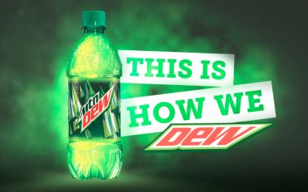

About Mountain Dew

Mountain Dew was first created in Virginia in 1948. It was bottled and sold by the Minges family.
It is known as a soft drink, but Mountain Dew differs slightly from many of the other carbonated drinks because it contains real orange juice.
In 1973, the Pepsi-Cola Company, which now owned Mountain Dew, decided on a change. They wanted to target a younger audience.
By 1993, the new slogan was “Do the Dew.” The word “mountain” was almost completely forgotten.
Then in 1995, Mountain Dew sponsored the first X Games, celebrating extreme sports. Commercials at that time showed young people skateboarding through traffic and grabbing unprotected bottles of Mountain Dew, or athletes running down a cheetah to retrieve a stolen can of the drink from the animal’s throat
It is now one of the most popular soft drinks made and also continues to sponsor the annual Dew Action Extreme Sports Tour and the summer and winter X Games.